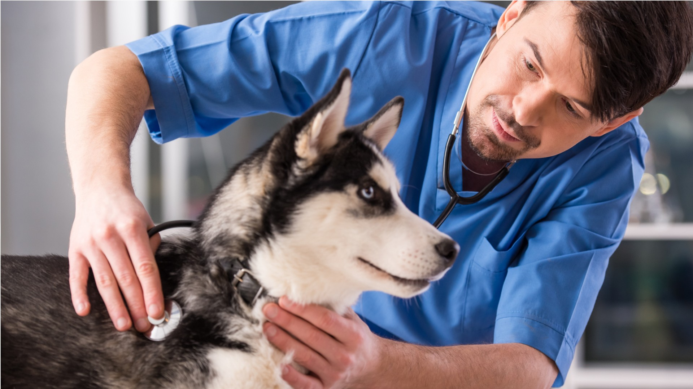

Dr. Elias - Cirurgião Veterinário

Formação e Especialização:
- Graduado em Medicina Veterinária pela Universidade Federal de São Paulo (UNIFESP).
- Especialização em Cirurgia de Pequenos Animais.
Competências:
- Cirurgia Abdominal:
- Realização de procedimentos como gastrotomia, enterotomia e esplenectomia.
- Tratamento de obstruções intestinais e doenças do trato gastrointestinal.
- Ortopedia:
- Correção de fraturas, luxações e lesões articulares.
- Uso de técnicas avançadas, como osteossíntese com placas e pinos.
- Oncologia:
- Diagnóstico e tratamento de tumores em animais.
- Realização de biópsias e cirurgias de remoção de neoplasias.
Abordagem:
Dr. Elias é conhecido por sua abordagem compassiva e dedicada aos pacientes e seus tutores. Sempre busca o melhor tratamento para cada caso, considerando o bem-estar do animal.